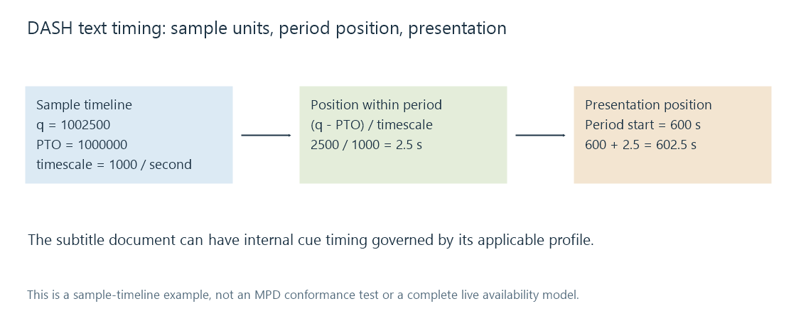

Timed text in MPEG-DASH
MPEG-DASH describes selectable timed-text representations and maps their sample timelines into periods on the presentation timeline.
MPEG-DASH can describe timed text alongside its video and audio representations. A text Adaptation Set identifies the content role and language, while its representations and segment descriptions tell the client what to retrieve and interpret.
The subtitle's representation can use TTML/IMSC or WebVTT carriage. The exact codec/profile declaration matters: “an MP4 segment” identifies the container family, not the timed-text model inside it.
A text adaptation set describes a choice
This original XML excerpt illustrates one text representation within a period. It omits the surrounding MPD and video/audio sets:
<Period start="PT600S">
<AdaptationSet lang="en" mimeType="application/mp4"
codecs="stpp.ttml.im1t">
<Role schemeIdUri="urn:mpeg:dash:role:2011" value="subtitle"/>
<Representation id="english" bandwidth="4000">
<SegmentTemplate timescale="1000" presentationTimeOffset="1000000"
initialization="text-init.mp4"
media="text-$Time$.m4s">
<SegmentTimeline>
<S t="1000000" d="6000" r="1"/>
</SegmentTimeline>
</SegmentTemplate>
</Representation>
</AdaptationSet>
</Period>
The codec identifier describes an IMSC text carriage profile, not every possible TTML feature. The example's language is English and its role is subtitle content. The segment description uses a 1,000-unit-per-second time scale and two six-second intervals.
DASH-IF's published profiles distinguish stpp-based XML timed text from wvtt WebVTT samples. Caption accessibility roles can supply additional selection information. A client still needs to implement the declared representation.
A sample timeline is mapped to the period
A stored sample time can be far from zero even when the period begins at a convenient programme position. presentationTimeOffset, or PTO, establishes which sample-timeline point corresponds to the period start.
Using sample time q and timescale f:
presentation time = period start + (q − PTO) / f
In the example, a sample position of 1,002,500 maps to:
600 + (1,002,500 − 1,000,000) / 1,000
= 600 + 2.5
= 602.5 seconds

| Sample position | Position within period | Presentation position |
|---|---|---|
| 1,000,000 | 0 s | 600 s |
| 1,002,500 | 2.5 s | 602.5 s |
| 1,006,000 | 6 s | 606 s |
PTO is measured in the representation's units, not directly in seconds. Subtracting it after dividing only the sample position, or adding it instead of subtracting, produces a different origin.
Segment numbers and URI values identify retrieved resources. They do not replace the sample timestamps within those resources.
A text document can contain its own cue timing
The calculation above describes the sample timeline mapping. An XML timed-text sample can contain a document with its own begin/end expressions, nested timing and profile rules. Its internal cue intervals must be interpreted using the applicable carriage/profile relationship.
That is why extracting XML and treating every begin as an absolute whole-movie timestamp can fail. TTML timing resolves the document's internal relationships; the delivery model places the resulting presentation in its period.
A sample's interval can also bound what the client presents. A cue described outside the applicable period or sample context is not automatically an instruction to continue indefinitely into later periods.
Period boundaries are presentation boundaries
A presentation can move into another period with a different origin relationship or representation. A caption active around that transition needs appropriate representation in the retained intervals.
The client must distinguish retained common content from a fresh timeline. Carrying an old PTO forward blindly can move otherwise valid subtitle data into another scene.
A live stream adds availability timing: when a segment can be requested is not the same quantity as when its subtitle is shown. Wall-clock availability, sample timestamps and the player's selected presentation delay describe different relationships.
For an Emby route consuming or producing a DASH presentation, inspect the actual subtitle representation and its period mapping. A source file's correct standalone cue times do not establish that the segmented delivery preserved the same programme origin.